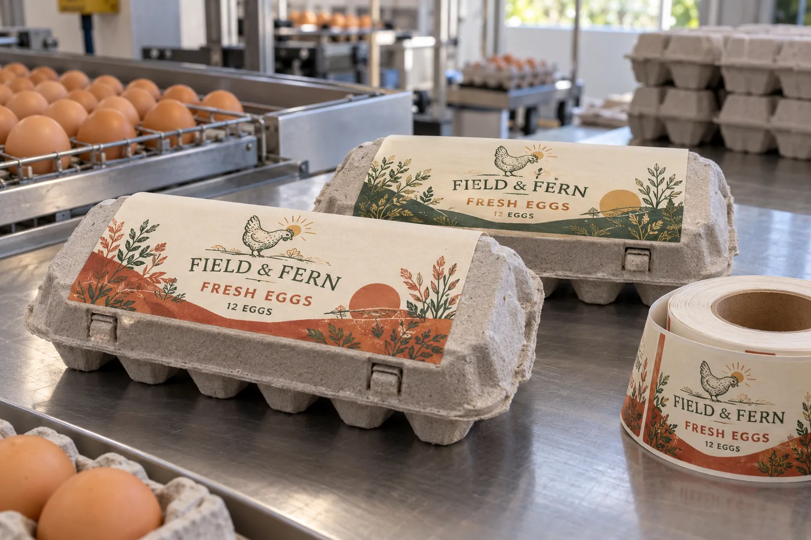

Why the lid surface changes the label decision
An egg buyer may send a lid dimension and ask for a price on one paper rectangle. My next request would be a carton from the intended supplier. Molded fiber has high and low spots, and the surface can shed dust. If the adhesive contacts only the peaks, an attractive flat proof tells us very little about the label on a real carton.
Avery Dennison's Pulmuone carton case study describes rough paper-carton texture, humid storage, edge lift and barcode-readability concerns. It is one documented project, not a promise that its material will solve every molded-pulp pack.
Put the print where the carton stays flat
Imagine a composite farm packing two egg sizes in the same visual family. The larger label may look balanced on one 12-count lid but run toward the closure on another mold. I would keep the logo, product name and any scannable code inside a confirmed flat zone, with enough margin that a slightly skewed application does not cross a rib or latch.
If the packer changes carton supplier, the lid outline is not the only possible change. The fiber texture, surface dust and moisture history may differ too. I would not silently transfer a passed label trial to a new carton simply because the outside dimensions match.
Separate artwork approval from line approval
First approve the brand artwork at actual size. Then apply production labels with the intended pressure and speed. Close the carton, stack it, handle it through the planned chilled or humid route, and scan the barcode at the retailer's likely angle. A film face is not automatically better than paper: either can fail when the adhesive and the surface are mismatched.
| Sample | What to inspect |
|---|---|
| Fresh carton | Dust, lid texture and usable flat area |
| Just labeled | Full contact, corners and skew tolerance |
| After storage | Edge lift, wrinkles and print scuff |
| At checkout | Barcode visibility and actual scan result |
Our buying view
A cheaper roll is not cheaper if the code will not scan
I would pay attention to the closed carton before negotiating tiny differences in label stock. A misread barcode or lifted corner is a daily operating cost; a beautiful material swatch does not offset it.
What to send for a useful quotation
- Closed cartons from every planned carton supplier and mold.
- Labeling speed, application method and storage conditions.
- Actual artwork, variable lot field and barcode placement.
- Any shelf-facing size or closure-clearance limit.
Compare the broader surface problem in labels on recycled paperboard, then use barcode verification versus a simple scan to define the check you need.
Frequently asked questions
Can any paper label stick to molded-fiber egg cartons?
Not reliably by material name alone. Texture, dust, moisture, adhesive and application pressure need a trial on the actual finished carton.
Where should an egg carton label go?
Start with the largest usable lid panel, then check closure clearance, curvature, print legibility and the scan path on the closed carton.
Can we print the barcode directly on the carton instead?
That may work for some carton designs, but rough fiber can affect contrast and scan performance. Verify the specific carton and printing process rather than assuming one method wins.
Related buyer guides
Review your label specification
Send package photos, label dimensions, material details, quantity and application conditions. Include good and failed samples where possible so the discussion starts with evidence.